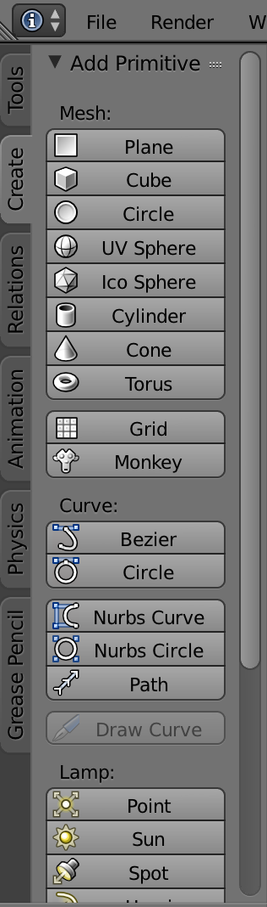
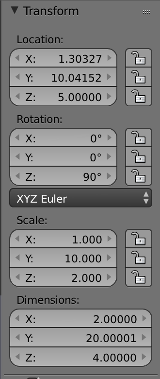
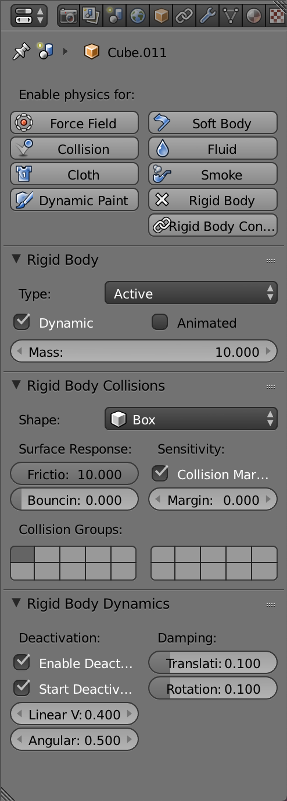
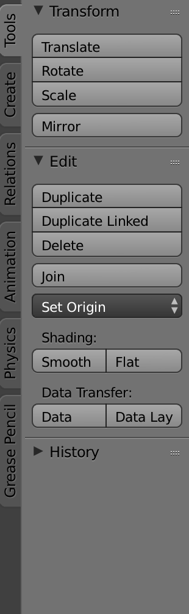
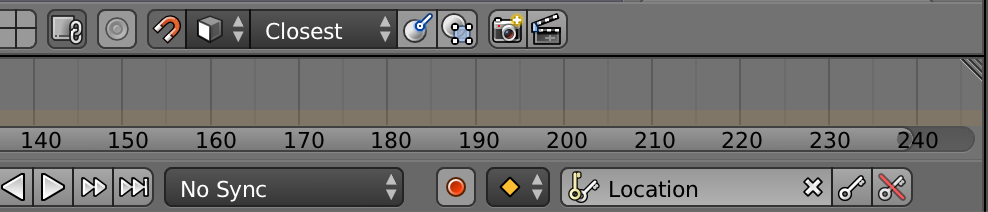
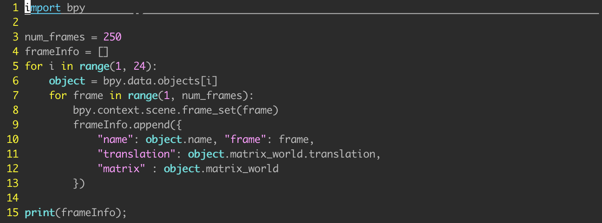
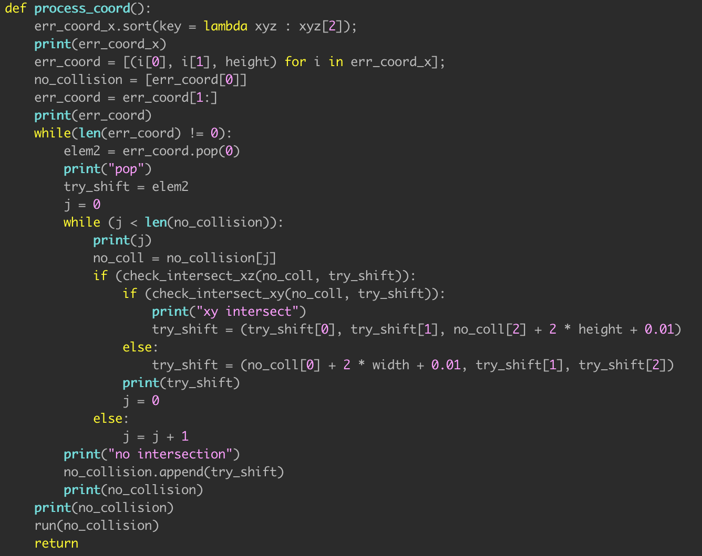

Keva Block Simulation Using Blender
Blender is an open source 3D modeling and animation software that uses the Bullet physics engine to simulate collions. Our goal is to simulate the orientation of each plank at each timestep. Intuitively, it is much easier to build a tower visually in a simulator, like Blender, and have its backend report back the orientations rather than building a tower from raw OpenGL code and doing numerical differentiation manually.
Building the tower requires knowledge of the Blender interface. Since the interface changes drastically between versions, I will be referring to the 2.79 version.
Instructions
- Set Ground Plane
- Create Block
- Duplicate
On the left edge of the UI, there are several tabs, one of which is labelled "Create". This tab allows the creation of object primitives in Blender. For the ground plane, select the "Plane" option under "Mesh".
Under the same tab, create a Keva block by creating a primitive "Cube". To the right of the main "User perspective" window, there is a "Transform" menu. While the cube is selected, change the settings under "Location" and "Rotation" to specify the orientation of the block, and "Scale" to define the dimensions.
To define the physical properties of the objects, go to the window on the right-most side. Under "Rigid Bodies", set the type to be "Active." "Active" objects are subject to gravity; "Passive" objects are not. Set "Shape" to be "Box" under "Rigid Body Collisions," which will enable rendering to be faster than "Mesh".
To duplicate a block, with all of its properties, select the block, select the "Tools" menu from the left-hand side, and select "Duplicate". You can then rotate the block specifically and change its location and orientation.
Blender relies on keyframes designated by the user and interpolates between the keyframes to achieve animation. Depending on how these frames are set, the ball will collide with the tower at a speed the user defines. This is especially useful if the ball is set at the top of a built structure and made to roll down a ramp to collide with a structure. Here, there would a single keyframe where the ball is initially set and all further dynamics would be calculated internally.
To add a keyframe, move the sliding time designator to a certain timeframe, move the ball a certain distance toward the tower. Afterwards, select the key icon on the bar to the lower right-hand side.
Gathering Frame Data via Python
The animation is saved into a ".blend" file that encapsulates all the simulation data. This can be passed into a python script that can unpack all the data pertaining to each frame. The following code will do as such:
Line 1: Import the Blender python module
Line 3: The number of frames is, by default, 250.
Line 6: All the mesh objects are stored in bpy.data.objects
Line 8: Data is categorized by frame. Setting the frame number will lookup all the object data pertaining to that specific frame.
Line 9 - 11: This appends several fields (name, translation vector, rotation matrix) to an array.
There are many more fields that the object structure contains. I have only listed those I thought were most important. Data like this can be the input to other algorithms (e.g. learning algorithms)
Error Correction with Simulation
One application that simulation may be applied is visualizing data that another system gives. In this case, that would be the vision system. As with from any sensor, the coordinates of the block locations given by the visual system may be erroneous. In the worst case, these coordinates may imply that blocks are overlapping within each other or some blocks are floating without support. One way we can combat this error is through processing the coordinates given by the visual system and rendering the processed coordinates in simulation to see if they correspond to the "ground truth," or the actual, physical layout of the blocks.
However, we do not want the simulation to completely throw away the data from the vision system, merely correct it such that the blocks are not overlapping or floating. Therefore, the heuristic that I define will be to minimize the dot product between the corrected coordinates and the given coordinates.
The algorithm I created borrows on the Separating Axis Theorem, which states that if we can find an axis along which the projection of the two shapes does not overlap, then the shapes do not overlap. A separating axis is defined to be perpendicular to a polygon's edge. This theorem only applies to convex polygons. The following image illustrates this theorem.
To simplify the problem, I first attempted to limit the overlap to 2-dimensional space. The algorithm would keep a list that has the invariant that all blocks within this list is non-overlapping. I will iteratively place blocks into this list, shifting the new block's x-coordinate until it overlaps with no other blocks. This immediately leads to the issue of having a staircase setup, where new blocks just continuously shift until it does not project onto an other blocks. This would continue until there is no correlation between the initial given coordinates and the corrected ones.
Surprisingly, this problem is mitigated by expanding the problem to 3 dimensions. The idea behind the algorithm remains the same; maintain a list of non-overlapping blocks. However, there is notion of "height" that allows for a possible shift in the z direction. In fact, to accomplish our goal of minimizing the dot product between the given and corrected coordinates, shifting in the z-dimension would should be prioritized, because it is the smallest dimension. If there is still an intersection, then there will be a shift in the x-direction, lastly followed by a shift in the y-direction. The pseudocode is included below.
Notes:
The shifts are 2*dimension + 0.01 because of the way the Blender Python API defines objects. They are given an x, y, z coordinate as its center and extend by some length in each dimension. The 0.01 offset is to make sure that the objects do not collide.
The check_intersect is a method that defines a polygon and uses the Separating Axis Theorem to check if they intersect. In Python, (as I have discovered later) there is a shapely.geometry module that contains a function that checks if two polygons intersect.